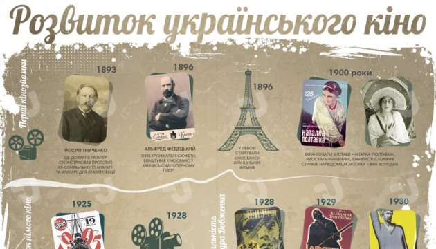
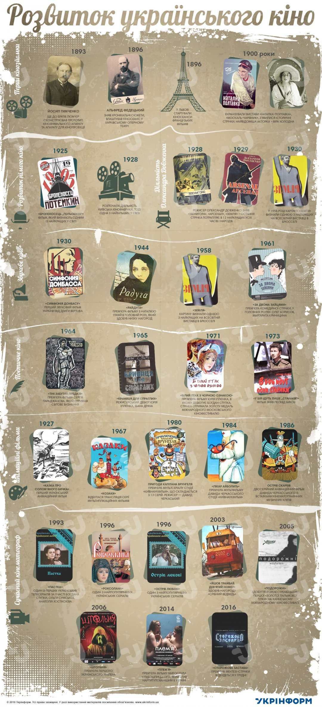

Розвиток українського кіно. Інфографіка
Щороку у другу суботу вересня відзначають День українського кіно. 10 вересня професійне свято працівників кінематографу в Україні відбудеться вже в 20-й раз. Також 120 років тому відбулася перша українська кінозйомка.
Відтак Укрінформ підготував інфографіку про розвиток українського кінематографу від перших зйомок ХІХ століття і до сьогодні.
Перші кінозйомки
Йосип Тимченко ще до братів Люм'єр сконструював прототип сучасного кінознімального апарату та апарату для кінопроекції. Фактично він вважається першовідкривачем кіно.
Альфред Федецький зняв хронікальні сюжети (перша українська кінозйомка), а потім влаштував кіносеанс у Харківському оперному театрі. Тоді ж у Львові стартували кіносеанси французьких фільмів.
До революції займалися екранізацією відомих вистав: «Наталка-Полтавка», «Москаль-чарівник». Також з’явилися історичні стрічки. Найвідоміша акторка того часу – Віра Холодна.
Розвиток німого кіно в Україні
Відбувся вихід фільму під назвою «Броненосець „Потьомкін“», який визнають одним із найкращих у світі.
Розпочала діяльність Київська кінофабрика, тоді одна з найбільших у світі. У майбутньому – це Київська кіностудія імені Олександра Довженка.
Варто відзначити діяльність режисера Олександра Довженка: він зняв такі фільми як «Звенигора», «Арсенал», «Земля». Остання зазначена картина визнана як одна з 12 найкращих картин усіх часів і народів.
Звукове кіно в Україні
«Симфонія Донбасу» - перший звуковий фільм України від режисера Дзиги Вертова.
Прем’єра фільму «Райдуга» з Наталією Ужвій в головній ролі, який здобув низку нагород.
Картину Олександра Довженка «Земля» визнали однією з найкращих на Всесвітній виставці в Брюсселі.
Прем’єра комедійної стрічки «За двома зайцями», у головних ролях знялися Олег Борисов, Маргарита Криницина.
Українське поетичне кіно
Українське поетичне кіно представляють режисери Сергій Параджанов, Юрій Іллєнко, Микола Мащенко, Леонід Осика, а також актори Іван Миколайчук, Гнат Юра, Богдан Ступка та ін.
Прем’єра «Тіні забутих предків» Сергія Параджанова. Фільм отримав світове визнання (нагороди Аргентини, Італії, Греції).
Відбувся режисерський дебют Юрія Іллєнка, Івана Драча – «Криниця для спраглих».
Прем’єра фільму «Білий птах з чорною ознакою» Юрія Іллєнка, в якому дебютує Богдан Ступка. Стрічка отримала золоту медаль Міжнародного Московського кінофестивалю.
Леонід Биков зняв фільм «У бій ідуть лише „старики“».
Українське кіно в період «застою»
У цей час на українських кіностудіях зняли відомі фільми: «Д'Артан'ян і три мушкетери», «Пригоди Електроніка», «Місце зустрічі змінити не можна», «Чарівники» та ін.
Українські анімаційні фільми
Трансляція відомої серії мультиплікаційних фільмів «Козаки».
Розквіт анімаційних фільмів: «Пригоди капітана Врунгеля», «Солом’яний бичок» та ін.
Український кінематограф під час перебудови
Вихід фільму Юрія Іллєнка «Лебедине озеро. Зона», який здобув нагороду Каннського кінофестивалю. Сценарист – Сергій Параджанов.
Сучасний кінематограф
Відбулося зародження українського телесеріалу. Один із перших – «Пастка» за участі Богдана Ступки, Ольги Сумської, Анатолія Хостікоєва. Найпопулярніші серіали в Україні: «Роксолана», «Острів кохання».
Український мультфільм «Йшов трамвай дев'ятий номер» здобув нагороду «Срібний ведмідь» Берлінського кінофестивалю.
Здобуття першої для незалежної України «Золотої пальмової гілки» на Каннському міжнародному кінофестивалі. Її отримав Ігор Стрембіцький за короткометражний фільм «Подорожні».
Прем’єра першого українського трилера «Штольня».
Прем’єра «Плем’я», першої у світі стрічки без слів (лише мова жестів), режисера Мирослава Слабошпицького. Фільм став найтитулованішим в Україні.
У грудні відбудеться прем’єра фентезі-стрічки «Сторожова застава».